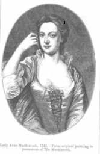
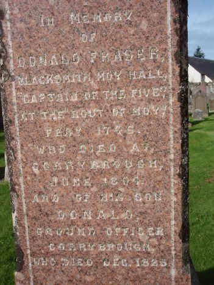

Cumha Do Bhaintighearna Mhic-An-Toisich
Lament for Lady McKintosh - Eloge funèbre de Lady McKintosh
A Dirge ascribed [1] to
Elégie attribuée [1] à
Iain Ruaidh Stiùbhairt
- John Roy Stewart (1700 -1752)
The Route of Moy 1746
Tune (midi)Tune (mp3)
"Cia iad na dèe 's na dùile treun"
N°106 P. 34 in the Rev. Patrick McDonald's Collection
First published in 1784 [2]
Sequenced by Ch.Souchon

Lady Anne McKintosh in 1746
|
NOTES
[1]This poem titled "Cumha Do Bhaintighearna Mhic-An-Toisich" (A dirge for Lady McKintosh" was, apparently, first published and ascribed to John Roy Stewart, in 1804 by Alexander Stewart (1764 - 1821) in his"Cochruinneacha taoghta de shaothair nam bard Gaeach = A choice collection of the works of the Highland bards". with the mention "For the air, see Mr Mac-Donald's Collection of Highland Airs, pages 16, 106". When John McKenzie published it in his "Sar Obair nam Bard Gaelach" in 1841, he added a long description of the "Moy rout" in English, thus connecting the song with "a Lady McKintosh of Moyhall whose firm attachment to the Chevalier's interest is well known". Charles Rogers in "The Modern Scottish Minstrel" Vol.II, (1856) published the present English tranlation with a short record of the "Moy route". He translates the word "thall" in the 3rd stanza as "Moy",the word "treun" (brave, bold, valiant) as "leal" ( thus alluding to the Jacobites) and "linn nan sluagh" (brood of warriors?) in the 4rth stanza as "chieftain's deed", a clear referrence to the "Moy rout". [2] The tune was published in Patrick McDonald's collection under the title "Cia iad na dèe 's na dùile treun" (the poem's first line) in 1784,
Apparently the last two aforesaid publishers mistook her for Lady Anne Farquharson-MacKintosh (1723 - 1787) who was born to John Farquharson of Invercauld, Chief of Clan Farquharson, a staunch Jacobite. She married Angus Mackintosh who succeeded his brother William to the chiefship of the Clan. Beside the fact that the last stanza of the poem explicitely points at Clan Menzies, "Colonel" Anne can by no means be the person referred to in the dirge, as she survived her husband by 15 years, and John Roy, who had left Britain forever in 1746, by 35 years! Consequently, this song became a Jacobite lament for Lady Anne McKintosh only because several publishers of song collections considered it was. |
NOTES
[1] Ce poème, intitulé "Cumha Do Bhaintighearna Mhic-An-Toisich" (Elégie pour Lady McKintosh fut publié, pour la première fois semble-t-il, et attribué à John Roy Stewart, en 1804 par Alexander Stewart (1764 - 1821) dans son "Cochruinneacha taoghta de shaothair nam bard Gaeach = Choix d'oeuvres des Bardes des Highlands" (1804), précédé de la remarque "Pour la mélodie, cf. M. McDonald, "Recueil d'airs des Highlands", pages 16,106". Lorsque John McKenzie le publia, à son tour, dans ses "Sar Obair nam Bard Gaelach" (1841), il ajouta un long récit en anglais de la "Déroute de Moy",créant ainsi le lien entre ce chant et une "Lady Mckintosh de Moyhall dont l'attachement à la cause du Chevalier est bien connu". Enfin Charles Rogers dans son "Modern Scottish Minstrel" Vol.II, (1856) publia la traduction anglaise qu'on trouvera ci-après, ainsi qu'une courte narration de la "Déroute de Moy". Il traduit le mot "thall" (=hall) de la 3ème strophe par "Moy", le mot "treun" (brave, courageux) 1ère strophe) par "leal" ("loyal", allusion aux Jacobites) et "linn nan sluagh" (engeance de guerriers?), dans la 4ème strophe. par "chieftain's deed" (haut-fait de chef", allusion à la "déroute") [2] La mélodie a été publiée par le pasteur Patrick McDonald sous le titre "Cia iad na dèe's na dùile treun" (le premier vers du poème), en 1784.
Il semble que les deux derniers éditeurs mentionnés ci-dessus l'aient confondue avec Lady Anne Farquharson- McKintosh (1723 - 1787), fille d'un Jacobite fameux, John Farquharson d'Invercauld, Chef du Clan Farquharson. Celle-ci épousa Angus Mckintosh qui avait succédé à son frère à la tête du clan. Outre le fait que la dernière strophe parle explicitement du Clan Menzies, "le colonel Anne" ne saurait être la personne concernée par le chant, car elle survécut 15 ans à son mari, et 35 ans à John Roy, qui avait d'ailleurs quitté la Grande Bretagne en 1746, pour ne plus jamais revenir! De sorte le chant qui suit n'est devenu une élégie Jacobite en l'honneur de Lady Anne McKintosh que parce que des générations d'éditeurs de recueils de chants l'ont considéré comme tel. |

|
LAMENT FOR LADY MCKINTOSH
|
CUMHA DO BHAINTIGHEARNA MHIC-AN-TOISICH
|
ELOGE FUNEBRE DE LADY MCKINTOSH
|

Plaque in memory of Donald Fraser, the blacksmith of Moy Hall
who led the "army" of five men at the "Rout of Moy" (February 1746).
|
[1] "Lady Anne McKintosh (1723-1787) was the wife of Angus, Chief of the Clan Mckintosh. Despite her husband fighting in the government's
Black Watch
during the '45 Rising, she raised between 200 and 400 men from Clan Chattan (a confederation of 16 clans under the McKintosh Chief) to fight for Bonnie Prince Charlie under the command of
McGillivray of Dunmaglass
. For this she earned the affectionate title 'Colonel Anne' and Bonnie Prince Charlie was said to have called her 'La Belle Rebelle', the beautiful rebel.
[2]
The heifer moans her friend
: Such strange images seem to be usual in
Gaelic poetry
.
|
[1] "Lady Anne McKintosh (1723-1787) était la femme d'Angus, chef du Clan Mckintosh. Bien que son mari combattît dans la
Garde Noire
au service du Roi, elle recruta de 200 à 400 hommes issus du Clan McKintosh et du Clan Chattan pour le Prince Charlie. Ils furent placés sous les ordres de
McGillivray of Dunmaglass
. C'est ce qui lui valut le titre affectueux de "Colonel Anne" et Charlie l'appelait, quant à lui, "La Belle Rebelle" (en français).
[2] "L'univers entier pleure.." : Dans l'original "chaque arbre, chaque forêt, chaque femme, chaque enfant, tout respire le chagrin; chaque herbe, chaque tige, chaque objet, chaque bovin est dans le plus grand deuil". Cette lamentation dont l'original est en gaélique utilise les étranges images usuelles dans la poésie gaélique . [3] Bien que le nom n'apparaisse pas dans le texte gaélique, on a pu penser que la "déroute de Moy" est évoquée de façon allusive dans ce "dirge" qui frappe par sa pathétique beauté. Peu après la bataille de Falkirk , le Prince séjournait à Moy Hall, la résidence de Lady Anne, quand celle-ci reçut un message de sa belle-mère l'avertissant que 500 hommes [d'autres disent 1500] des forces gouvernementales ayant à leur tête Lord Loudon, s'apprêtaient à attaquer Moy Hall pendant la nuit, pour s'emparer du Prince et empocher la récompense de 30.000 livres promises pour sa capture. Lady Anne fit venir un vieux forgeron qu'elle envoya, accompagné de six hommes armés d'un claymore, d'un poignard, de fusils ainsi que d'une cornemuse et d'un tambour faire du bruit et lancer les cris de guerre des clans (slogans) pour faire croire aux Hanovriens qu'ils avaient devant eux l'armée Jacobite au grand complet. La ruse fut un succès et les Hanovriens prirent la fuite. L'épisode est connu comme "la déroute de Moy" . Le mois suivant, son époux et 300 de ses hommes furent capturés au nord d'Inverness. Le Prince confia le capitaine McKintosh à son épouse en précisant "qu'il ne serait nulle part mieux en sécurité ou plus honorablement traité". Elle le salua par ces mots fameux "Votre servante, Capitaine", ce à quoi il répondit "A vos ordres, Colonel!", faisant usage de son surnom "Colonel Anne". Après Culloden, [on prétend que] Lady Anne fut arrêtée et confiée pour un temps aux soins de sa belle-mère. Elle rencontra quelque temps après le Duc de Cumberland lors d'une soirée à Londres où elle accompagnait son mari. Il l'invita à danser alors qu'on jouait un air hanovrien et elle lui rendit le compliment en l'invitant à danser sur un air Jacobite ." Source: http://www.ambaile.org.uk/ (The Gaelic Village) "La 'déroute de Moy' n'entraîna qu'une seule perte en vie humaine, celle du sonneur héréditaire des McLeods, McCrimmon, qui avait prophétisé sa propre mort dans l'élégie 'Cha till mi tuille' que l'on peut traduire par 'Je ne reviendrai pas'. Malgré tout, cette retraite honteuse démoralisa la garnison d'Inverness au point que 200 hommes désertèrent le lendemain." Excerpt from: "Walking with Charlie" by Steve Lord http://www.pookuspublications.co.uk . [4] Meyners : Comme il a été dit, le chant fut écrit en l'honneur de Lady Christiane Menzies -McKintosh et non pour sa belle-soeur, Lady Anne. Le gaélique "Mheannudh Mor" est la désignation officielle du chef du Clan Menzies dont le fondateur était un certain Robert de Meyners ou Mesnières, tandis que Lady Anne était le fille de John Farquharson d'Invercauld, Chef du Clan Farquharson. Le château dont il est question dans la dernière strophe est le Château des Menzies de Weem (=Uaihm = "caverne"), dans le Pertshire, le siège des chefs du Clan Menzies. En 1746, le Prince y passa deux nuits, alors qu'il remontait avec un détachement de son armée, de Stirling vers Inverness. Quatre jours plus tard c'était le tour des troupes de Cumberland d'occuper le château. Des détails sur la vie de Lady Anne furent publiés dans le "Scots Magazine" de 1746. En 1763 elle se vit décerner le titre de "franche-bourgeoise et consoeur de la guilde" d'Inverness. A la mort de son mari, elle s'installa à Leith où elle mourut en 1787, quatorze ans après son mari, si l'on en croit une lettre adressée à un ami par le neveu de son mari. Elle fut enterrée dans le Cimetière de la Coburg Street au Nord de Leith [où une plaque fixée près de l'entrée retrace sa vie. Mais l'emplacement de la tombe est inconnu]. Source: http://www.leithhistory.co.uk/life-and-time of-lady-anne-mackintosh . |